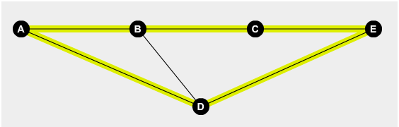

Mario Kart
TL: 1 segundo (~50 casos)
ML: 64MB
Filipe está jogando Mario Kart com Anderson. Eles querem jogar de modo cooperativo. Para evitar possíveis conflitos na corrida, eles decidem nunca usar os mesmos caminhos de um ponto até o outro, ou seja, eles querem usar caminhos distintos.
Na corrida temos alguns pontos, e para mover de um ponto até o outro podemos ter vários caminhos. Seu objetivo é descobrir se eles podem chegar do ponto 1 até o ponto N sem usar os mesmos caminhos (arestas).
É garantido que todos os pontos podem ser alcançados a partir do ponto inicial.

Os pontos estão representados pelos círculos. Os caminhos são as linhas que ligam estes pontos. Este é o último caso de exemplo. Um dos dois pode ir por A->B->C->E e o outro por A->D->E, portanto eles não usaram os mesmos caminhos e a resposta é S. Eles podem passar pelos mesmos pontos (vértices), mas não devem usar os mesmos caminhos (arestas)!
Entrada
A primeira linha de cada caso de teste contém os números N (1 <= N <= 10^3) e M (1 <= M <= 3*10^3), indicando o número de pontos e o número de caminhos. Cada uma das M linhas seguintes representa um caminho. Há dois números em cada linha, que são os identificadores de dois pontos conectados pelo caminho, o identificador dos pontos irá de 1 até N. A entrada poderá conter mais de um caminho conectando dois pontos, assim como um caminho conectando um ponto a ele mesmo. Leia até o EOF.
Saída
Imprima "S" caso possível e "N" caso contrário.
Exemplos
Entrada de Teste
3 3
1 2
2 3
1 3
3 3
1 2
2 3
2 3
5 6
1 2
2 3
3 5
1 4
2 4
4 5
2 2
2 1
1 2
Saída de Teste
S
N
S
S